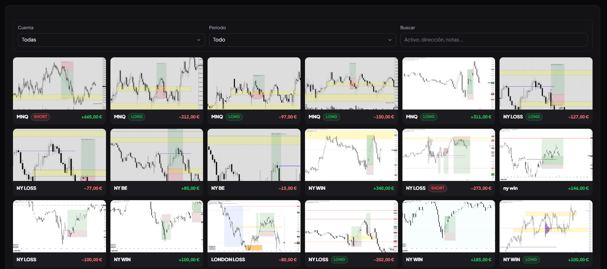
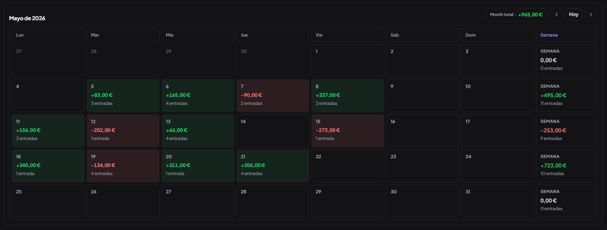
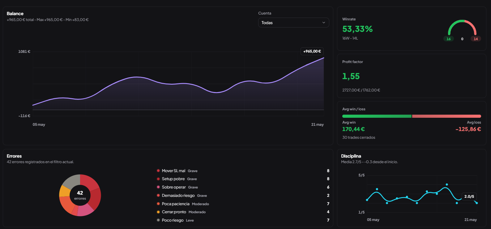
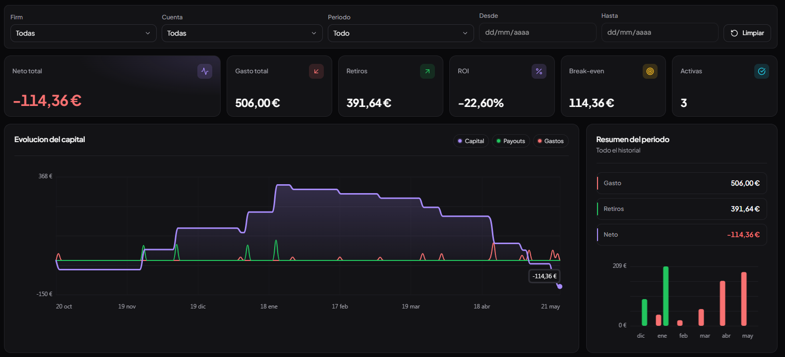

Journal visual
Guarda operaciones con captura, notas y errores para revisar rápido qué hiciste bien y qué se repite.

Registra operaciones, controla cuentas, gastos, payouts y disciplina con un dashboard pensado para traders que quieren ver su resultado real.
Trazza no es solo una lista de trades. Une captura, activo, dirección, disciplina, estado mental, errores y P&L para que puedas revisar patrones sin perderte en hojas sueltas.

Guarda operaciones con captura, notas y errores para revisar rápido qué hiciste bien y qué se repite.

Ve días verdes, días rojos, totales semanales y evolución mensual sin reconstruir nada a mano.

Winrate, profit factor, errores, disciplina y balance conectados con tus entradas reales.
La vista de dashboard resume tu evolución, mientras las pantallas de detalle te dejan bajar hasta cada operación cuando necesitas revisar contexto.
Balance, winrate, profit factor, disciplina y errores se actualizan con cada entrada.
Filtra por cuenta, periodo, activo, dirección o notas.
Detecta semanas buenas, sesiones flojas y rachas de pérdida.
Una cuenta puede parecer rentable hasta que sumas compras, resets, activaciones, comisiones y payouts. Trazza te ayuda a ver el neto real.
Registra empresas, cuentas, movimientos y estados para no mezclar rendimiento operativo con dinero gastado.

14 días de prueba gratis, sin tarjeta. Después, un único plan con acceso completo a Trazza.
Equivale a 3,50 € al mes
14 días gratis, sin tarjeta
Prueba Trazza gratis 14 días y úsalo como centro de control para tus operaciones, finanzas y revisión diaria.